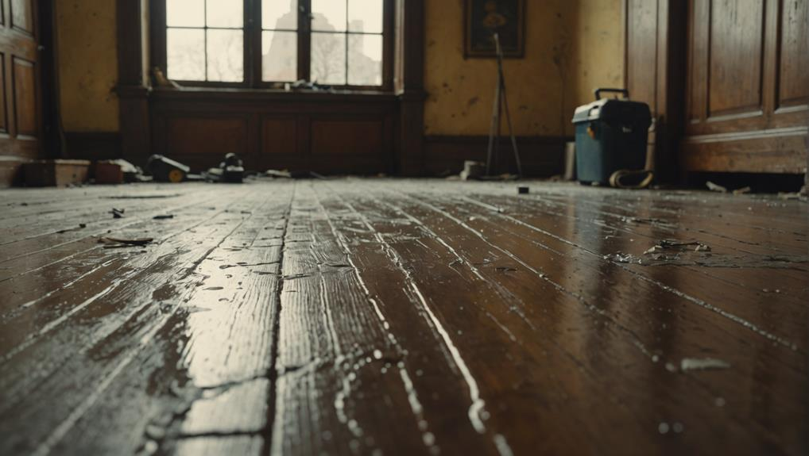
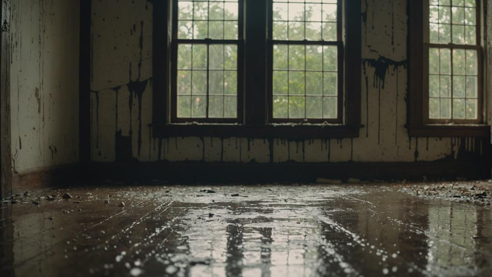
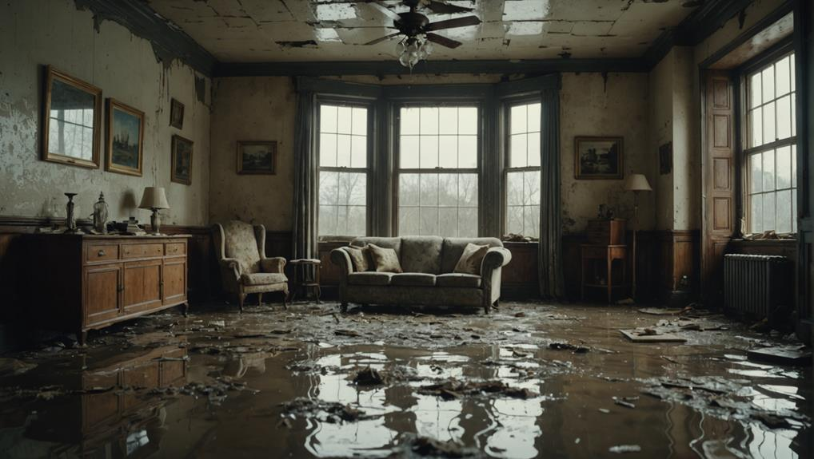
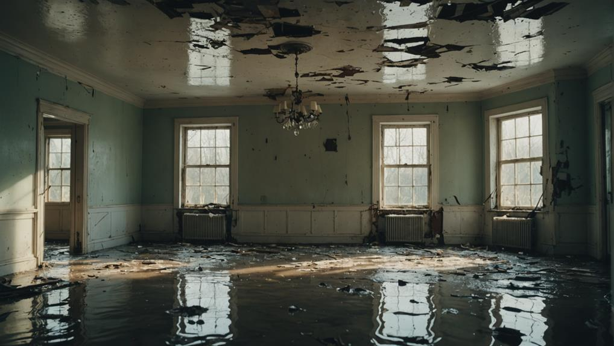

24/7 Emergency Response • Certified Technicians • Insurance Claim Assistance
Call Now: (888) 450-0858When water damage strikes your home or business in McKinney, TX, you need a reliable restoration company that can respond quickly and effectively. Our certified technicians provide comprehensive water damage restoration services to help you restore your property to its pre-loss condition.

Our advanced equipment quickly removes standing water and thoroughly dries affected areas to prevent mold growth. We provide professional water removal services to protect your property from further damage.

Professional mold removal and prevention services to ensure your property is safe and healthy. Our mold remediation experts handle both residential and commercial properties in McKinney.

Complete restoration of damaged structures to bring your property back to its pre-loss condition. We handle both fire damage and water damage restoration with expert precision.
When disaster strikes, our emergency response team is ready to help. We understand that water damage requires immediate attention to prevent further property damage and mold growth. Our restoration process begins with a thorough assessment of the damage and a detailed plan to restore your property.
Our emergency water damage restoration services are available around the clock. We typically arrive within 1 hour of your call to begin the restoration process.
Our restoration experts use state-of-the-art equipment for water extraction, drying, and dehumidification. We handle both residential restoration and commercial restoration projects.
We work directly with insurance companies to streamline the claims process. Our team provides comprehensive documentation to support your insurance claims.
As your trusted water damage restoration company in McKinney, TX, we provide comprehensive damage restoration services to both homes and businesses. Our professional restoration services include:
Whether you're dealing with flood damage, storm damage, or water damage from any other source, our professional restoration services in McKinney are here to help. We serve properties in McKinney and surrounding areas, providing peace of mind to property owners throughout TX.

As your reliable water damage restoration company in McKinney, we provide professional restoration services throughout the greater McKinney area. Our service area includes:
Our restoration company in McKinney is equipped to handle any size project, from small water damage cleanup to large-scale flood damage restoration. We work with all major insurance companies and provide detailed documentation for the claims process.
Our emergency response team arrives quickly to assess the damage and begin the restoration process.
We use professional water removal equipment to extract standing water and begin the drying process.
Our technicians thoroughly assess the damage and create a detailed restoration plan.
We use advanced equipment to dry affected areas and prevent mold growth.
We clean and sanitize all affected areas to ensure your property is safe and healthy.
We restore your property to its pre-loss condition, including structural repairs if needed.
We offer comprehensive water damage restoration services including water extraction, drying, dehumidification, mold remediation, and structural repairs. Our services are available 24/7 for emergency response in McKinney and surrounding areas.
We provide 24/7 emergency response and typically arrive within 1 hour of your call. Our rapid response helps minimize damage and prevent mold growth.
Yes, we work with all major insurance companies and can help you navigate the claims process. We provide detailed documentation and work directly with your insurance adjuster.
We primarily serve McKinney, TX and surrounding areas. Our service area includes residential and commercial properties throughout the greater McKinney region.
Our certified technicians perform thorough mold inspections and remediation. We use advanced equipment to detect and remove mold, ensuring your property is safe and healthy.